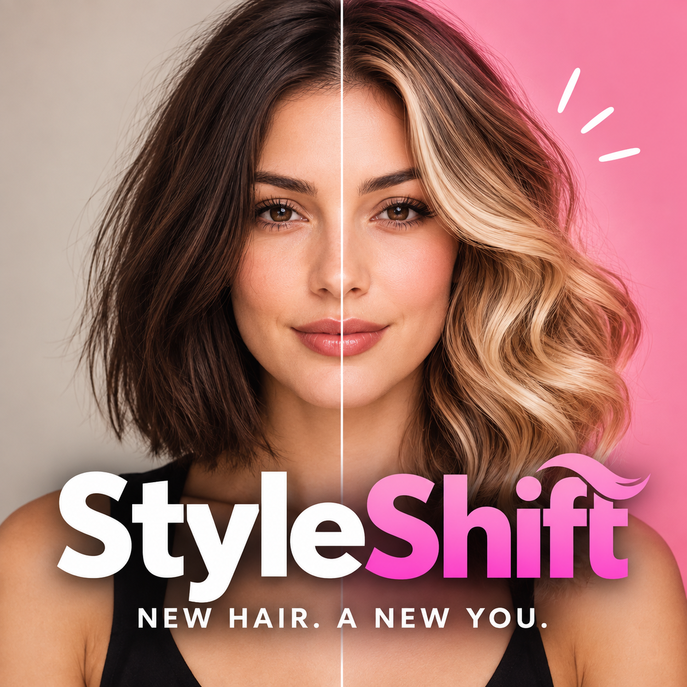

Hairstyle
Try new cuts, lengths, and textures while keeping your look recognisable.
✦AI HAIR & STYLE STUDIO
Preview hairstyles, hair colours, and fashion looks on your own photo before you make a change.
Get it on Google Play
YOUR PERSONAL LOOKBOOK
Explore a new direction for your hair, colour, or wardrobe—without leaving your mirror.
EXPLORE YOUR OPTIONS
Try new cuts, lengths, and textures while keeping your look recognisable.
✦Preview natural, bold, highlighted, ombré, and balayage changes.
◐Create a look for spring, summer, autumn, or winter with your photo.
✺See yourself styled for a date, interview, wedding, party, or trip.
↗SIMPLE BY DESIGN
Add a clear selfie or outfit image from your camera or gallery.
Choose hair, colour, seasonal fashion, or an occasion-based look.
Generate, compare, save, and share your favourite transformations.
CREATED FOR EXPLORING
Style Shift makes AI-created previews for inspiration. Test a bold colour, a different cut, or a complete outfit direction, then save the looks you want to discuss with your stylist.